Klasifikasi Citra Sepatu: Berantakan vs Rapi — Ekstraksi Fitur dan Klasifikasi#
Fitur yang diekstraksi dari setiap citra:
Kelompok |
Fitur |
Rumus (slide / jurnal) |
|---|---|---|
Warna (RGB) |
|
Pers. (2) |
Warna (RGB) |
|
Pers. (3) |
Warna (RGB) |
|
Pers. (4) |
Tekstur (GLCM, grayscale) |
|
Pers. (8) |
Tekstur (GLCM, grayscale) |
|
Pers. (5) |
Tekstur (GLCM, grayscale) |
|
Pers. (6) |
Tekstur (GLCM, grayscale) |
|
Pers. (7) |
Tekstur (GLCM, grayscale) |
|
Pers. (9) |
Target |
|
|
Hasil akhir disimpan ke data/processed/fitur_lengkap.csv.
Setelah itu (Bab 11–13), fitur tersebut dipakai untuk klasifikasi (14 fitur sesuai ketentuan; 24 fitur tambahan yang disesuaikan dengan karakter foto bersifat opsional, lihat Bab 9 dan 14) dengan 7 metode (Random Forest, SVM, KNN, Logistic Regression, Decision Tree, Naive Bayes, Gradient Boosting), lengkap dengan confusion matrix dan akurasi, dengan alur yang sama seperti klasifikasi audio.
1. Import Library#
import os
import io
import glob
import zipfile
import numpy as np
import pandas as pd
from PIL import Image
import matplotlib.pyplot as plt
2. Pilih File Dataset#
Dataset dipilih langsung lewat tombol Choose Files, tanpa folder atau path. Bisa berupa:
file zip, misalnya
berantakan.zipdanrapi.zip(pilih keduanya sekaligus), ataugambar satuan (
.jpg,.png, dll.) yang nama filenya mengandung kataberantakan/rapi.
Tombol muncul saat sel di bawah dijalankan. Di Google Colab muncul tombol Choose Files, sedangkan di Jupyter lokal muncul jendela pilih file.
import io, zipfile
UKURAN_RESIZE = (256, 256) # semua gambar disamakan ukurannya
EKSTENSI = (".jpg", ".jpeg", ".png", ".bmp", ".webp", ".jfif")
# Parameter GLCM: jarak d = 1, sudut θ = 0° (tetangga kanan), 256 level keabuan
GLCM_DX, GLCM_DY, GLCM_LEVEL = 1, 0, 256
FOLDER_OUTPUT = "data/processed" # tempat CSV hasil (dibuat otomatis)
os.makedirs(FOLDER_OUTPUT, exist_ok=True)
def pilih_file():
"""Tampilkan dialog pilih file. Kembalikan dict {nama_file: isi_bytes}."""
try:
from google.colab import files # Google Colab
return dict(files.upload())
except ImportError: # Jupyter / VS Code lokal
import tkinter as tk
from tkinter import filedialog
root = tk.Tk(); root.withdraw(); root.attributes("-topmost", True)
paths = filedialog.askopenfilenames(title="Pilih zip / gambar dataset")
root.destroy()
hasil = {}
for pth in paths:
with open(pth, "rb") as fh:
hasil[os.path.basename(pth)] = fh.read()
return hasil
berkas = pilih_file()
if not berkas:
raise FileNotFoundError("Belum ada file yang dipilih. Jalankan ulang sel ini lalu pilih file.")
print("File dipilih:", list(berkas))
---------------------------------------------------------------------------
ModuleNotFoundError Traceback (most recent call last)
Cell In[2], line 15, in pilih_file()
14 try:
---> 15 from google.colab import files # Google Colab
16 return dict(files.upload())
ModuleNotFoundError: No module named 'google'
During handling of the above exception, another exception occurred:
TclError Traceback (most recent call last)
Cell In[2], line 29
26 hasil[os.path.basename(pth)] = fh.read()
27 return hasil
---> 29 berkas = pilih_file()
30 if not berkas:
31 raise FileNotFoundError("Belum ada file yang dipilih. Jalankan ulang sel ini lalu pilih file.")
Cell In[2], line 20, in pilih_file()
18 import tkinter as tk
19 from tkinter import filedialog
---> 20 root = tk.Tk(); root.withdraw(); root.attributes("-topmost", True)
21 paths = filedialog.askopenfilenames(title="Pilih zip / gambar dataset")
22 root.destroy()
File /usr/local/python/3.12.1/lib/python3.12/tkinter/__init__.py:2340, in Tk.__init__(self, screenName, baseName, className, useTk, sync, use)
2338 baseName = baseName + ext
2339 interactive = False
-> 2340 self.tk = _tkinter.create(screenName, baseName, className, interactive, wantobjects, useTk, sync, use)
2341 if useTk:
2342 self._loadtk()
TclError: no display name and no $DISPLAY environment variable
3. Membaca Data#
3.1 Jumlah gambar#
def tentukan_label(teks):
teks = teks.lower().replace("\\", "/")
if "berantakan" in teks or "messy" in teks:
return "berantakan"
if "rapi" in teks or "neat" in teks or "tidy" in teks:
return "rapi"
return None
arsip = {} # zip yang berhasil dibuka
kandidat = [] # (sumber, path di dalam sumber)
for nama, isi in berkas.items():
if nama.lower().endswith(".zip"):
try:
arsip[nama] = zipfile.ZipFile(io.BytesIO(isi))
except zipfile.BadZipFile:
print(f"ZIP RUSAK, dilewati: {nama}")
continue
for p in sorted(arsip[nama].namelist()):
base = os.path.basename(p)
if p.endswith("/") or "__MACOSX" in p or base.startswith("._"):
continue # lewati folder & file sampah Mac
if base.lower().endswith(EKSTENSI):
kandidat.append((nama, p))
elif nama.lower().endswith(EKSTENSI):
kandidat.append((nama, nama)) # gambar satuan
else:
print(f"Dilewati (bukan zip/gambar): {nama}")
def baca_bytes(sumber, path):
if sumber in arsip:
return arsip[sumber].read(path)
return berkas[sumber]
data, rusak = [], []
for sumber, path in kandidat:
try:
Image.open(io.BytesIO(baca_bytes(sumber, path))).verify() # cek gambar utuh
except Exception as e:
rusak.append({"sumber": sumber, "path": path, "error": type(e).__name__})
continue
label = tentukan_label(path) or tentukan_label(sumber)
data.append({"sumber": sumber, "path": path, "nama_file": os.path.basename(path), "label": label})
df = pd.DataFrame(data, columns=["sumber", "path", "nama_file", "label"])
rusak = pd.DataFrame(rusak, columns=["sumber", "path", "error"])
if df["label"].isna().any():
print("PERINGATAN: gambar berikut labelnya tidak dikenali dan DIBUANG")
print("(beri nama file/zip yang mengandung 'berantakan' atau 'rapi'):")
print(df[df["label"].isna()]["path"].head().to_string(), "\n")
df = df[df["label"].notna()].reset_index(drop=True)
print("Total gambar terbaca :", len(df))
print("Gambar dilewati :", len(rusak))
print()
print(df["label"].value_counts(dropna=False))
if len(rusak):
print("\nPERINGATAN: file berikut tidak bisa dibaca dan dilewati")
print(rusak.groupby(["sumber", "error"]).size().rename("jumlah").to_string())
if df["label"].nunique() < 2:
raise ValueError("Hanya ada kurang dari 2 kelas. Pilih juga dataset kelas lainnya.")
Total gambar terbaca : 194
Gambar dilewati : 0
label
berantakan 97
rapi 97
Name: count, dtype: int64
3.2 Contoh gambar asli#
def buka_gambar(idx):
"""Baca gambar ke-idx dari zip/folder ke memori."""
row = df.loc[idx]
return Image.open(io.BytesIO(baca_bytes(row["sumber"], row["path"])))
contoh = pd.concat([df[df.label == "berantakan"].head(2), df[df.label == "rapi"].head(2)])
fig, axes = plt.subplots(1, len(contoh), figsize=(4 * len(contoh), 4), squeeze=False)
for ax, (idx, row) in zip(axes[0], contoh.iterrows()):
img = buka_gambar(idx)
ax.imshow(img)
ax.set_title(f"{row['label']}\n{img.size} | {img.mode}")
ax.axis("off")
plt.show()
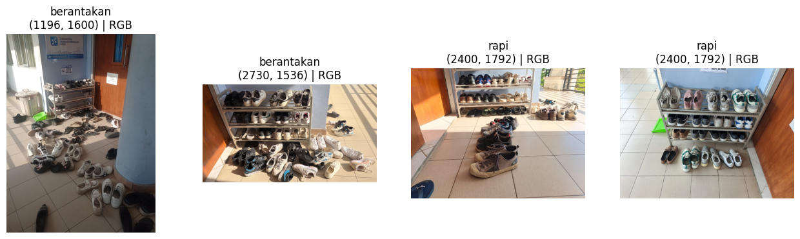
4. Preprocessing#
Konversi ke RGB — gambar PNG (RGBA) atau grayscale disamakan menjadi 3 kanal.
Resize — semua gambar disamakan ukurannya menjadi 256 × 256 piksel.
def preprocessing(idx):
img = buka_gambar(idx)
img = img.convert("RGB") # 1. konversi RGB
img = img.resize(UKURAN_RESIZE) # 2. resize
return np.array(img, dtype=np.float64) # array (256, 256, 3)
# Preprocessing semua gambar sekali saja, disimpan di memori
citra_rgb = {idx: preprocessing(idx) for idx in df.index}
arr = citra_rgb[0]
print("Jumlah citra :", len(citra_rgb))
print("Shape setelah preprocessing:", arr.shape)
print("Nilai piksel min - max :", arr.min(), "-", arr.max())
Jumlah citra : 194
Shape setelah preprocessing: (256, 256, 3)
Nilai piksel min - max : 6.0 - 255.0
# Sebelum vs sesudah preprocessing
fig, axes = plt.subplots(1, 2, figsize=(10, 4))
asli = buka_gambar(0)
axes[0].imshow(asli); axes[0].set_title(f"Asli {asli.size}")
axes[1].imshow(citra_rgb[0].astype(np.uint8)); axes[1].set_title(f"Preprocessing {UKURAN_RESIZE}")
for ax in axes: ax.axis("off")
plt.show()
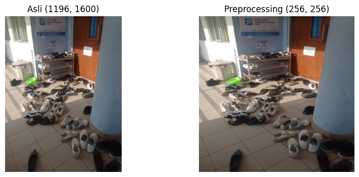
5. Ekstraksi Fitur Warna: Mean, Std, Skewness tiap Kanal#
dengan \(C \in \{R, G, B\}\) dan \(M \times N\) = jumlah piksel. Skewness positif = distribusi menceng ke kanan (banyak piksel gelap, sedikit yang terang); negatif = menceng ke kiri.
def mean_kanal(k):
return k.sum() / k.size # Pers. (2)
def std_kanal(k):
mu = mean_kanal(k)
return np.sqrt(np.sum((k - mu) ** 2) / k.size) # Pers. (3)
def skew_kanal(k):
mu, sd = mean_kanal(k), std_kanal(k)
if sd == 0:
return 0.0 # citra polos: tidak menceng
return np.sum(((k - mu) / sd) ** 3) / k.size # Pers. (4)
# Contoh perhitungan untuk 1 gambar
idx = 0
arr = citra_rgb[idx]
print("Gambar :", df.loc[idx, "path"], "| label:", df.loc[idx, "label"], "\n")
for i, nama in enumerate("RGB"):
k = arr[:, :, i]
print(f"Kanal {nama}: mean = {mean_kanal(k):9.4f} | std = {std_kanal(k):8.4f} | skew = {skew_kanal(k):8.4f}")
# Cek: hasil manual harus sama dengan numpy / scipy
from scipy.stats import skew as scipy_skew
k = arr[:, :, 0]
print("\nCek kanal R dengan library:")
print(" numpy mean :", round(k.mean(), 4), "| numpy std:", round(k.std(), 4),
"| scipy skew:", round(scipy_skew(k.ravel()), 4))
Gambar : foto-psd/berantakan/24-003 Berantakan 2.jpg | label: berantakan
Kanal R: mean = 108.5442 | std = 55.0561 | skew = 0.8111
Kanal G: mean = 101.3958 | std = 53.7121 | skew = 0.8241
Kanal B: mean = 96.5326 | std = 52.8137 | skew = 0.7943
Cek kanal R dengan library:
numpy mean : 108.5442 | numpy std: 55.0561 | scipy skew: 0.8111
hasil = []
for idx, row in df.iterrows():
arr = citra_rgb[idx]
baris = {"id": idx + 1, "nama_file": row["nama_file"]}
for stat, fungsi in [("mean", mean_kanal), ("std", std_kanal), ("skew", skew_kanal)]:
for i, nama in enumerate("rgb"):
baris[f"{stat}_{nama}"] = round(fungsi(arr[:, :, i]), 4)
baris["label"] = row["label"]
hasil.append(baris)
tabel = pd.DataFrame(hasil)
tabel.to_csv(os.path.join(FOLDER_OUTPUT, "fitur_warna.csv"), index=False)
print("Disimpan ke:", os.path.abspath(os.path.join(FOLDER_OUTPUT, "fitur_warna.csv")))
tabel.head()
Disimpan ke: c:\Users\LALIR\Documents\s5\PSD IF5A\image-classification\data\processed\fitur_warna.csv
| id | nama_file | mean_r | mean_g | mean_b | std_r | std_g | std_b | skew_r | skew_g | skew_b | label | |
|---|---|---|---|---|---|---|---|---|---|---|---|---|
| 0 | 1 | 24-003 Berantakan 2.jpg | 108.5442 | 101.3958 | 96.5326 | 55.0561 | 53.7121 | 52.8137 | 0.8111 | 0.8241 | 0.7943 | berantakan |
| 1 | 2 | 24-003 Berantakan 3.jpg | 149.4176 | 129.9941 | 112.1718 | 72.8466 | 69.7848 | 63.4107 | -0.2158 | -0.1189 | -0.1042 | berantakan |
| 2 | 3 | 24-003 berantakan.jpg | 144.5782 | 109.8351 | 85.6104 | 70.3410 | 57.7117 | 53.7634 | -0.0283 | 0.2784 | 0.6641 | berantakan |
| 3 | 4 | 24-006 Berantakan 1.jpg | 120.5385 | 112.6790 | 109.4066 | 53.0531 | 51.0577 | 50.7295 | -0.5030 | -0.2669 | -0.1847 | berantakan |
| 4 | 5 | 24-006 Berantakan 2.jpg | 126.6296 | 119.9131 | 116.6886 | 54.1044 | 50.0877 | 48.7256 | -0.7745 | -0.5788 | -0.4273 | berantakan |
6. Konversi ke Grayscale#
Hasilnya dibulatkan menjadi 8 bit (nilai 0–255), jadi ada 256 level keabuan.
def rgb_ke_gray(arr):
R, G, B = arr[:, :, 0], arr[:, :, 1], arr[:, :, 2]
gray = 0.299 * R + 0.587 * G + 0.114 * B
return np.clip(np.round(gray), 0, 255).astype(np.uint8) # 8 bit: 0-255
citra_gray = {idx: rgb_ke_gray(arr) for idx, arr in citra_rgb.items()}
print("Jumlah citra grayscale :", len(citra_gray))
print("Level keabuan : 2^8 =", 2**8, "(nilai 0 - 255)")
idx = 0
arr, gray = citra_rgb[idx], citra_gray[idx]
print("\nGambar :", df.loc[idx, "path"], "| label:", df.loc[idx, "label"])
print("Shape RGB :", arr.shape, "-> Shape gray:", gray.shape)
print("Tipe data :", gray.dtype, "| min:", gray.min(), "| max:", gray.max())
r, g, b = arr[0, 0]
print(f"\nPiksel (0,0): R={r:.0f}, G={g:.0f}, B={b:.0f}")
print(f"Gray = 0.299*{r:.0f} + 0.587*{g:.0f} + 0.114*{b:.0f} = {0.299*r + 0.587*g + 0.114*b:.2f} -> {gray[0, 0]}")
n = 5
print(f"\nNilai gray ({n}x{n} piksel pertama):")
print(pd.DataFrame(gray[:n, :n]).to_string())
fig, axes = plt.subplots(1, 2, figsize=(10, 4))
axes[0].imshow(arr.astype(np.uint8)); axes[0].set_title("RGB")
axes[1].imshow(gray, cmap="gray", vmin=0, vmax=255); axes[1].set_title("Grayscale (256 level)")
for ax in axes: ax.axis("off")
plt.show()
Jumlah citra grayscale : 194
Level keabuan : 2^8 = 256 (nilai 0 - 255)
Gambar : foto-psd/berantakan/24-003 Berantakan 2.jpg | label: berantakan
Shape RGB : (256, 256, 3) -> Shape gray: (256, 256)
Tipe data : uint8 | min: 6 | max: 255
Piksel (0,0): R=98, G=101, B=90
Gray = 0.299*98 + 0.587*101 + 0.114*90 = 98.85 -> 99
Nilai gray (5x5 piksel pertama):
0 1 2 3 4
0 99 120 156 155 155
1 102 113 155 156 155
2 102 108 148 158 156
3 99 105 138 160 158
4 98 105 126 160 160
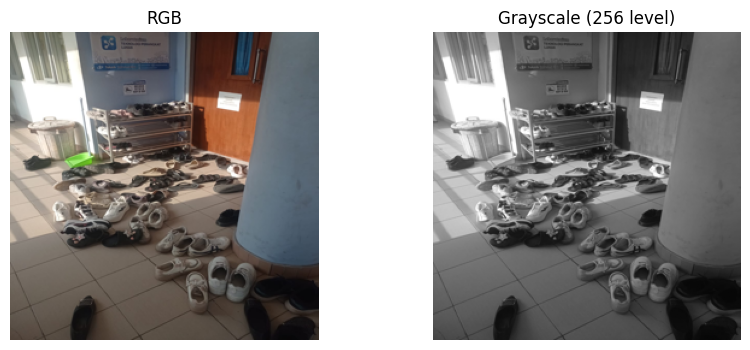
7. Matriks Co-occurrence (GLCM)#
GLCM mencatat seberapa sering pasangan nilai piksel (i, j) muncul pada offset tertentu. Di sini dipakai d = 1, θ = 0°: piksel referensi (x, y) dipasangkan dengan tetangga kanannya (x, y+1).
Tabulasi frekuensi pasangan → GLCM mentah (baris = piksel asal, kolom = piksel tetangga)
Normalisasi: \(P(i,j) = \dfrac{GLCM(i,j)}{\sum GLCM}\), sehingga jumlah semua \(P(i,j) = 1\)
def buat_glcm(gray, levels=GLCM_LEVEL, dx=GLCM_DX, dy=GLCM_DY):
"""GLCM mentah. dx=1, dy=0 -> d=1, θ=0° (tetangga kanan)."""
h, w = gray.shape
ref = gray[0:h - dy, 0:w - dx].ravel().astype(np.int64) # piksel referensi
tet = gray[dy:h, dx:w].ravel().astype(np.int64) # piksel tetangga
glcm = np.zeros((levels, levels), dtype=np.int64)
np.add.at(glcm, (ref, tet), 1) # tabulasi frekuensi pasangan
return glcm
def normalisasi_glcm(glcm):
return glcm / glcm.sum() # P(i,j)
# Cek dengan contoh citra 3x3 di slide (level 0, 1, 2)
contoh = np.array([[0, 1, 1],
[0, 2, 1],
[2, 2, 0]])
g = buat_glcm(contoh, levels=3)
print("GLCM mentah (contoh slide):")
print(pd.DataFrame(g).to_string())
print("\nTotal pasangan:", g.sum())
print("\nGLCM ternormalisasi P(i,j):")
print(pd.DataFrame(normalisasi_glcm(g)).round(3).to_string())
GLCM mentah (contoh slide):
0 1 2
0 0 1 1
1 0 1 0
2 1 1 1
Total pasangan: 6
GLCM ternormalisasi P(i,j):
0 1 2
0 0.000 0.167 0.167
1 0.000 0.167 0.000
2 0.167 0.167 0.167
# Matriks co-occurrence untuk 1 gambar dataset
idx = 0
glcm = buat_glcm(citra_gray[idx])
P = normalisasi_glcm(glcm)
print("Gambar :", df.loc[idx, "path"], "| label:", df.loc[idx, "label"])
print("Ukuran GLCM :", glcm.shape)
print("Total pasangan :", glcm.sum(), "(= 256 baris x 255 pasangan per baris)")
print("Jumlah P(i,j) :", round(P.sum(), 6))
# Tampilkan potongan di sekitar nilai keabuan yang paling sering muncul
pusat = int(np.median(citra_gray[idx]))
a, b = max(pusat - 5, 0), min(pusat + 5, 256)
print(f"\nPotongan GLCM mentah (level {a}-{b - 1}):")
print(pd.DataFrame(glcm[a:b, a:b], index=range(a, b), columns=range(a, b)).to_string())
plt.figure(figsize=(6, 5))
plt.imshow(np.log1p(glcm), cmap="viridis")
plt.colorbar(label="log(1 + frekuensi)")
plt.title("GLCM (d=1, θ=0°)")
plt.xlabel("j (piksel tetangga)"); plt.ylabel("i (piksel referensi)")
plt.show()
Gambar : foto-psd/berantakan/24-003 Berantakan 2.jpg | label: berantakan
Ukuran GLCM : (256, 256)
Total pasangan : 65280 (= 256 baris x 255 pasangan per baris)
Jumlah P(i,j) : 1.0
Potongan GLCM mentah (level 94-103):
94 95 96 97 98 99 100 101 102 103
94 191 72 29 10 9 5 9 6 3 1
95 125 145 83 28 10 4 6 3 5 3
96 55 122 147 101 27 12 8 6 6 5
97 17 59 141 248 99 36 24 8 6 15
98 11 22 68 176 209 83 29 16 17 6
99 10 8 20 74 182 283 120 33 15 9
100 7 7 10 23 87 238 439 81 35 21
101 6 4 5 9 19 65 220 265 100 47
102 3 7 5 10 11 12 77 226 236 121
103 6 1 3 9 10 7 15 88 230 389
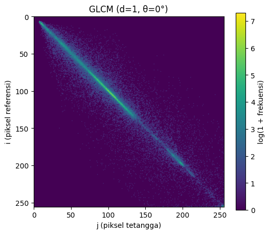
# Hitung matriks P(i,j) semua gambar sekali saja, dipakai untuk semua fitur tekstur
glcm_semua = {idx: normalisasi_glcm(buat_glcm(gray)) for idx, gray in citra_gray.items()}
i_idx, j_idx = np.indices((GLCM_LEVEL, GLCM_LEVEL)) # matriks indeks i dan j
def tambah_fitur(nama_kolom, fungsi):
"""Hitung fitur untuk semua gambar lalu sisipkan kolomnya sebelum kolom label."""
nilai = [float(fungsi(glcm_semua[idx])) for idx in df.index]
if nama_kolom in tabel.columns:
tabel.drop(columns=nama_kolom, inplace=True) # aman kalau sel dijalankan ulang
tabel.insert(tabel.columns.get_loc("label"), nama_kolom, nilai)
print("GLCM siap untuk", len(glcm_semua), "gambar")
GLCM siap untuk 194 gambar
8. Fitur Tekstur GLCM#
Setiap fitur ditambahkan satu per satu sebagai kolom baru.
8.1 Energi — Pers. (8)#
Disebut juga Angular Second Moment. Nilai tinggi = tekstur seragam.
def energi(P):
return np.sum(P ** 2)
tambah_fitur("energi", energi)
tabel.head()
| id | nama_file | mean_r | mean_g | mean_b | std_r | std_g | std_b | skew_r | skew_g | skew_b | energi | label | |
|---|---|---|---|---|---|---|---|---|---|---|---|---|---|
| 0 | 1 | 24-003 Berantakan 2.jpg | 108.5442 | 101.3958 | 96.5326 | 55.0561 | 53.7121 | 52.8137 | 0.8111 | 0.8241 | 0.7943 | 0.001497 | berantakan |
| 1 | 2 | 24-003 Berantakan 3.jpg | 149.4176 | 129.9941 | 112.1718 | 72.8466 | 69.7848 | 63.4107 | -0.2158 | -0.1189 | -0.1042 | 0.000317 | berantakan |
| 2 | 3 | 24-003 berantakan.jpg | 144.5782 | 109.8351 | 85.6104 | 70.3410 | 57.7117 | 53.7634 | -0.0283 | 0.2784 | 0.6641 | 0.000323 | berantakan |
| 3 | 4 | 24-006 Berantakan 1.jpg | 120.5385 | 112.6790 | 109.4066 | 53.0531 | 51.0577 | 50.7295 | -0.5030 | -0.2669 | -0.1847 | 0.000759 | berantakan |
| 4 | 5 | 24-006 Berantakan 2.jpg | 126.6296 | 119.9131 | 116.6886 | 54.1044 | 50.0877 | 48.7256 | -0.7745 | -0.5788 | -0.4273 | 0.001151 | berantakan |
8.2 Entropi — Pers. (5)#
Keacakan tekstur, berkisar 0 sampai \(\log_2\) jumlah sel GLCM. Sel bernilai 0 dilewati karena \(\log_2 0\) tidak terdefinisi.
def entropi(P):
nz = P[P > 0]
return -np.sum(nz * np.log2(nz))
tambah_fitur("entropi", entropi)
tabel.head()
| id | nama_file | mean_r | mean_g | mean_b | std_r | std_g | std_b | skew_r | skew_g | skew_b | energi | entropi | label | |
|---|---|---|---|---|---|---|---|---|---|---|---|---|---|---|
| 0 | 1 | 24-003 Berantakan 2.jpg | 108.5442 | 101.3958 | 96.5326 | 55.0561 | 53.7121 | 52.8137 | 0.8111 | 0.8241 | 0.7943 | 0.001497 | 11.489697 | berantakan |
| 1 | 2 | 24-003 Berantakan 3.jpg | 149.4176 | 129.9941 | 112.1718 | 72.8466 | 69.7848 | 63.4107 | -0.2158 | -0.1189 | -0.1042 | 0.000317 | 13.031921 | berantakan |
| 2 | 3 | 24-003 berantakan.jpg | 144.5782 | 109.8351 | 85.6104 | 70.3410 | 57.7117 | 53.7634 | -0.0283 | 0.2784 | 0.6641 | 0.000323 | 12.863681 | berantakan |
| 3 | 4 | 24-006 Berantakan 1.jpg | 120.5385 | 112.6790 | 109.4066 | 53.0531 | 51.0577 | 50.7295 | -0.5030 | -0.2669 | -0.1847 | 0.000759 | 12.109519 | berantakan |
| 4 | 5 | 24-006 Berantakan 2.jpg | 126.6296 | 119.9131 | 116.6886 | 54.1044 | 50.0877 | 48.7256 | -0.7745 | -0.5788 | -0.4273 | 0.001151 | 11.153807 | berantakan |
8.3 Kontras — Pers. (6)#
Rendah = halus/homogen; tinggi = kasar, banyak transisi tajam.
def kontras(P):
return np.sum((i_idx - j_idx) ** 2 * P)
tambah_fitur("kontras", kontras)
tabel.head()
| id | nama_file | mean_r | mean_g | mean_b | std_r | std_g | std_b | skew_r | skew_g | skew_b | energi | entropi | kontras | label | |
|---|---|---|---|---|---|---|---|---|---|---|---|---|---|---|---|
| 0 | 1 | 24-003 Berantakan 2.jpg | 108.5442 | 101.3958 | 96.5326 | 55.0561 | 53.7121 | 52.8137 | 0.8111 | 0.8241 | 0.7943 | 0.001497 | 11.489697 | 178.333303 | berantakan |
| 1 | 2 | 24-003 Berantakan 3.jpg | 149.4176 | 129.9941 | 112.1718 | 72.8466 | 69.7848 | 63.4107 | -0.2158 | -0.1189 | -0.1042 | 0.000317 | 13.031921 | 589.411811 | berantakan |
| 2 | 3 | 24-003 berantakan.jpg | 144.5782 | 109.8351 | 85.6104 | 70.3410 | 57.7117 | 53.7634 | -0.0283 | 0.2784 | 0.6641 | 0.000323 | 12.863681 | 482.808042 | berantakan |
| 3 | 4 | 24-006 Berantakan 1.jpg | 120.5385 | 112.6790 | 109.4066 | 53.0531 | 51.0577 | 50.7295 | -0.5030 | -0.2669 | -0.1847 | 0.000759 | 12.109519 | 331.673698 | berantakan |
| 4 | 5 | 24-006 Berantakan 2.jpg | 126.6296 | 119.9131 | 116.6886 | 54.1044 | 50.0877 | 48.7256 | -0.7745 | -0.5788 | -0.4273 | 0.001151 | 11.153807 | 147.458640 | berantakan |
8.4 Korelasi — Pers. (7)#
dengan \(\mu_i = \sum i\,P(i,j)\), \(\sigma_i = \sqrt{\sum (i-\mu_i)^2 P(i,j)}\) (begitu juga untuk j). Berkisar −1 sampai 1; 1 = hubungan linear positif sempurna antara piksel dan tetangganya.
def korelasi(P):
mu_i = np.sum(i_idx * P)
mu_j = np.sum(j_idx * P)
sd_i = np.sqrt(np.sum((i_idx - mu_i) ** 2 * P))
sd_j = np.sqrt(np.sum((j_idx - mu_j) ** 2 * P))
if sd_i * sd_j == 0:
return 1.0 # citra polos: dianggap korelasi sempurna
return np.sum((i_idx - mu_i) * (j_idx - mu_j) * P) / (sd_i * sd_j)
tambah_fitur("korelasi", korelasi)
tabel.head()
| id | nama_file | mean_r | mean_g | mean_b | std_r | std_g | std_b | skew_r | skew_g | skew_b | energi | entropi | kontras | korelasi | label | |
|---|---|---|---|---|---|---|---|---|---|---|---|---|---|---|---|---|
| 0 | 1 | 24-003 Berantakan 2.jpg | 108.5442 | 101.3958 | 96.5326 | 55.0561 | 53.7121 | 52.8137 | 0.8111 | 0.8241 | 0.7943 | 0.001497 | 11.489697 | 178.333303 | 0.968367 | berantakan |
| 1 | 2 | 24-003 Berantakan 3.jpg | 149.4176 | 129.9941 | 112.1718 | 72.8466 | 69.7848 | 63.4107 | -0.2158 | -0.1189 | -0.1042 | 0.000317 | 13.031921 | 589.411811 | 0.938569 | berantakan |
| 2 | 3 | 24-003 berantakan.jpg | 144.5782 | 109.8351 | 85.6104 | 70.3410 | 57.7117 | 53.7634 | -0.0283 | 0.2784 | 0.6641 | 0.000323 | 12.863681 | 482.808042 | 0.928412 | berantakan |
| 3 | 4 | 24-006 Berantakan 1.jpg | 120.5385 | 112.6790 | 109.4066 | 53.0531 | 51.0577 | 50.7295 | -0.5030 | -0.2669 | -0.1847 | 0.000759 | 12.109519 | 331.673698 | 0.936609 | berantakan |
| 4 | 5 | 24-006 Berantakan 2.jpg | 126.6296 | 119.9131 | 116.6886 | 54.1044 | 50.0877 | 48.7256 | -0.7745 | -0.5788 | -0.4273 | 0.001151 | 11.153807 | 147.458640 | 0.971639 | berantakan |
8.5 Homogenitas — Pers. (9)#
Disebut juga Inverse Difference Moment. Nilainya besar kalau isi GLCM terkumpul di sekitar diagonal.
def homogenitas(P):
return np.sum(P / (1 + np.abs(i_idx - j_idx)))
tambah_fitur("homogenitas", homogenitas)
tabel.head()
| id | nama_file | mean_r | mean_g | mean_b | std_r | std_g | std_b | skew_r | skew_g | skew_b | energi | entropi | kontras | korelasi | homogenitas | label | |
|---|---|---|---|---|---|---|---|---|---|---|---|---|---|---|---|---|---|
| 0 | 1 | 24-003 Berantakan 2.jpg | 108.5442 | 101.3958 | 96.5326 | 55.0561 | 53.7121 | 52.8137 | 0.8111 | 0.8241 | 0.7943 | 0.001497 | 11.489697 | 178.333303 | 0.968367 | 0.444492 | berantakan |
| 1 | 2 | 24-003 Berantakan 3.jpg | 149.4176 | 129.9941 | 112.1718 | 72.8466 | 69.7848 | 63.4107 | -0.2158 | -0.1189 | -0.1042 | 0.000317 | 13.031921 | 589.411811 | 0.938569 | 0.303823 | berantakan |
| 2 | 3 | 24-003 berantakan.jpg | 144.5782 | 109.8351 | 85.6104 | 70.3410 | 57.7117 | 53.7634 | -0.0283 | 0.2784 | 0.6641 | 0.000323 | 12.863681 | 482.808042 | 0.928412 | 0.300613 | berantakan |
| 3 | 4 | 24-006 Berantakan 1.jpg | 120.5385 | 112.6790 | 109.4066 | 53.0531 | 51.0577 | 50.7295 | -0.5030 | -0.2669 | -0.1847 | 0.000759 | 12.109519 | 331.673698 | 0.936609 | 0.352516 | berantakan |
| 4 | 5 | 24-006 Berantakan 2.jpg | 126.6296 | 119.9131 | 116.6886 | 54.1044 | 50.0877 | 48.7256 | -0.7745 | -0.5788 | -0.4273 | 0.001151 | 11.153807 | 147.458640 | 0.971639 | 0.443736 | berantakan |
8.6 Cek dengan library scikit-image#
Kontras dan korelasi dibandingkan dengan graycoprops. Energi dibandingkan dengan ASM (di scikit-image, energy = √ASM).
Homogenitas tidak dibandingkan karena scikit-image memakai penyebut \(1+(i-j)^2\), sedangkan Pers. (9) memakai \(1+|i-j|\).
try:
from skimage.feature import graycomatrix, graycoprops
idx = 0
g = graycomatrix(citra_gray[idx], distances=[1], angles=[0], levels=256, normed=True)
P = glcm_semua[idx]
print(f"{'fitur':10} {'manual':>14} {'scikit-image':>14}")
for nama, manual, lib in [
("energi", energi(P), graycoprops(g, "ASM")[0, 0]),
("kontras", kontras(P), graycoprops(g, "contrast")[0, 0]),
("korelasi", korelasi(P), graycoprops(g, "correlation")[0, 0]),
]:
print(f"{nama:10} {manual:14.6f} {lib:14.6f}")
except ImportError:
print("scikit-image belum terpasang, cek dilewati (pip install scikit-image)")
fitur manual scikit-image
energi 0.001497 0.001497
kontras 178.333303 178.333303
korelasi 0.968367 0.968367
9. Fitur Tambahan Sesuai Karakter Data#
Foto-foto di dataset ini berisi sepatu yang tertata di rak (rapi) atau tersebar di lantai (berantakan). Perbedaannya ada pada susunan, sedangkan mean, std, skewness warna, dan GLCM satu arah hanya meringkas seluruh gambar. Saat dicoba, rata-rata kedua kelas hampir sama sehingga model mentok di sekitar 65–70%.
Karena itu fitur dilengkapi dengan yang menangkap pola lokal, dihitung dari citra grayscale yang sama:
Fitur |
Isi |
Yang ditangkap |
|---|---|---|
|
histogram Local Binary Pattern (uniform, P=8, R=1) |
pola tekstur lokal: tepi, sudut, area datar |
|
kekuatan tepi (Sobel), seluruh gambar dan separuh atas/bawah |
seberapa ramai gambar, dan di bagian mana |
|
ringkasan Histogram of Oriented Gradients |
arah dan keteraturan garis (misalnya garis rak) |
|
GLCM (kontras, homogenitas, energi, korelasi) sudut 0° dan 90°, 32 level |
tekstur horizontal dan vertikal |
Pengaturan PAKAI_FITUR_TAMBAHAN (di sel kode di bawah):
Nilai |
CSV utama dan klasifikasi |
|---|---|
|
Persis sesuai ketentuan dosen: 14 fitur + |
|
14 fitur asli + 24 fitur tambahan + |
Daftar 14 fitur asli disimpan di FITUR_ASLI.
# ===== PENGATURAN =====
# False = CSV & klasifikasi persis sesuai ketentuan dosen (14 fitur + label)
# True = ikut menambahkan 24 fitur tambahan ke CSV & klasifikasi (38 fitur)
PAKAI_FITUR_TAMBAHAN = False
# ======================
import sys, subprocess
try:
import skimage
except ImportError: # pasang otomatis kalau belum ada
print("Memasang scikit-image ...")
subprocess.check_call([sys.executable, "-m", "pip", "install", "scikit-image"])
import skimage
from skimage.feature import local_binary_pattern, hog, graycomatrix, graycoprops
from skimage.filters import sobel
# 14 fitur sesuai ketentuan dosen (sebelum fitur tambahan ditambahkan)
FITUR_ASLI = [c for c in tabel.columns if c not in ("id", "nama_file", "label")]
def fitur_tambahan(gray):
f = {}
# 1. Kekuatan tepi (Sobel), seluruh gambar dan separuh atas/bawah
e = sobel(gray / 255.0)
h = gray.shape[0] // 2
f["edge_mean"], f["edge_dens"] = e.mean(), (e > 0.1).mean()
f["edge_atas"], f["edge_bawah"] = e[:h].mean(), e[h:].mean()
# 2. Local Binary Pattern (uniform) -> histogram 10 bin
lbp = local_binary_pattern(gray, P=8, R=1, method="uniform")
hist = np.bincount(lbp.astype(int).ravel(), minlength=10) / lbp.size
for i, v in enumerate(hist):
f[f"lbp{i}"] = v
# 3. HOG (ringkasannya saja)
hg = hog(gray, orientations=8, pixels_per_cell=(32, 32), cells_per_block=(1, 1))
f["hog_mean"], f["hog_std"] = hg.mean(), hg.std()
# 4. GLCM sudut 0° dan 90° pada 32 level keabuan
q = (gray // 8).astype(np.uint8)
for sudut, nama in [(0, "0"), (np.pi / 2, "90")]:
g = graycomatrix(q, [4], [sudut], levels=32, symmetric=True, normed=True)
for prop in ["contrast", "homogeneity", "energy", "correlation"]:
f[f"g{nama}_{prop}"] = graycoprops(g, prop)[0, 0]
return f
tambahan = pd.DataFrame([fitur_tambahan(citra_gray[idx]) for idx in df.index]).round(6)
tambahan.to_csv(os.path.join(FOLDER_OUTPUT, "fitur_tambahan.csv"), index=False) # selalu disimpan terpisah
# buang dulu kalau sel dijalankan ulang, lalu sisipkan sebelum kolom label bila diminta
tabel.drop(columns=[c for c in tambahan.columns if c in tabel.columns], inplace=True)
if PAKAI_FITUR_TAMBAHAN:
for kolom in tambahan.columns:
tabel.insert(tabel.columns.get_loc("label"), kolom, tambahan[kolom].values)
print(f"Fitur asli : {len(FITUR_ASLI)}")
print(f"Fitur tambahan : {tambahan.shape[1]} ({'dipakai di CSV utama' if PAKAI_FITUR_TAMBAHAN else 'disimpan terpisah, tidak dipakai'})")
print(f"Total fitur CSV : {len(tabel.columns) - 3} (di luar id, nama_file, label)")
tabel.head()
Fitur asli : 14
Fitur tambahan : 24 (disimpan terpisah, tidak dipakai)
Total fitur CSV : 14 (di luar id, nama_file, label)
| id | nama_file | mean_r | mean_g | mean_b | std_r | std_g | std_b | skew_r | skew_g | skew_b | energi | entropi | kontras | korelasi | homogenitas | label | |
|---|---|---|---|---|---|---|---|---|---|---|---|---|---|---|---|---|---|
| 0 | 1 | 24-003 Berantakan 2.jpg | 108.5442 | 101.3958 | 96.5326 | 55.0561 | 53.7121 | 52.8137 | 0.8111 | 0.8241 | 0.7943 | 0.001497 | 11.489697 | 178.333303 | 0.968367 | 0.444492 | berantakan |
| 1 | 2 | 24-003 Berantakan 3.jpg | 149.4176 | 129.9941 | 112.1718 | 72.8466 | 69.7848 | 63.4107 | -0.2158 | -0.1189 | -0.1042 | 0.000317 | 13.031921 | 589.411811 | 0.938569 | 0.303823 | berantakan |
| 2 | 3 | 24-003 berantakan.jpg | 144.5782 | 109.8351 | 85.6104 | 70.3410 | 57.7117 | 53.7634 | -0.0283 | 0.2784 | 0.6641 | 0.000323 | 12.863681 | 482.808042 | 0.928412 | 0.300613 | berantakan |
| 3 | 4 | 24-006 Berantakan 1.jpg | 120.5385 | 112.6790 | 109.4066 | 53.0531 | 51.0577 | 50.7295 | -0.5030 | -0.2669 | -0.1847 | 0.000759 | 12.109519 | 331.673698 | 0.936609 | 0.352516 | berantakan |
| 4 | 5 | 24-006 Berantakan 2.jpg | 126.6296 | 119.9131 | 116.6886 | 54.1044 | 50.0877 | 48.7256 | -0.7745 | -0.5788 | -0.4273 | 0.001151 | 11.153807 | 147.458640 | 0.971639 | 0.443736 | berantakan |
# Fitur mana yang paling membedakan kedua kelas? (nilai F ANOVA, makin besar makin baik)
from sklearn.feature_selection import f_classif
gabung = pd.concat([tabel[FITUR_ASLI].reset_index(drop=True), tambahan.reset_index(drop=True)], axis=1)
F, _ = f_classif(gabung, tabel["label"])
pd.Series(F, index=gabung.columns).sort_values(ascending=False).head(10).round(2).to_frame("nilai F")
| nilai F | |
|---|---|
| lbp1 | 23.81 |
| lbp3 | 16.21 |
| lbp7 | 12.53 |
| std_b | 5.06 |
| g90_energy | 4.35 |
| g0_correlation | 4.29 |
| g0_energy | 3.85 |
| g0_contrast | 3.22 |
| hog_std | 2.79 |
| energi | 2.74 |
10. Simpan Tabel Fitur Lengkap#
Kolom: id, nama_file, 9 fitur warna, 5 fitur GLCM, dan label (sesuai ketentuan dosen). Kalau PAKAI_FITUR_TAMBAHAN = True, 24 fitur tambahan dari Bab 9 ikut masuk. Semuanya disimpan dalam satu CSV: fitur_lengkap.csv.
FILE_OUTPUT = os.path.join(FOLDER_OUTPUT, "fitur_lengkap.csv")
tabel.to_csv(FILE_OUTPUT, index=False)
print("Disimpan ke :", os.path.abspath(FILE_OUTPUT))
print("Ukuran tabel :", tabel.shape[0], "baris x", tabel.shape[1], "kolom")
print("Kolom :", list(tabel.columns))
tabel
# Opsional: unduh CSV ke komputer (hanya jalan di Google Colab)
try:
from google.colab import files as _f
_f.download(FILE_OUTPUT)
except ImportError:
pass
Disimpan ke : c:\Users\LALIR\Documents\s5\PSD IF5A\image-classification\data\processed\fitur_lengkap.csv
Ukuran tabel : 194 baris x 17 kolom
Kolom : ['id', 'nama_file', 'mean_r', 'mean_g', 'mean_b', 'std_r', 'std_g', 'std_b', 'skew_r', 'skew_g', 'skew_b', 'energi', 'entropi', 'kontras', 'korelasi', 'homogenitas', 'label']
# Ringkasan: rata-rata tiap fitur per kelas
kolom_fitur = [c for c in tabel.columns if c not in ("id", "nama_file", "label")]
tabel.groupby("label")[kolom_fitur].mean().T.round(4)
| label | berantakan | rapi |
|---|---|---|
| mean_r | 136.8167 | 136.2102 |
| mean_g | 126.7661 | 126.6028 |
| mean_b | 117.9485 | 120.0486 |
| std_r | 58.9995 | 56.7706 |
| std_g | 59.5261 | 59.7277 |
| std_b | 59.4874 | 61.8966 |
| skew_r | -0.3153 | -0.2577 |
| skew_g | -0.1303 | -0.0629 |
| skew_b | -0.0366 | -0.0447 |
| energi | 0.0018 | 0.0009 |
| entropi | 11.8260 | 11.9689 |
| kontras | 270.9854 | 272.3886 |
| korelasi | 0.9608 | 0.9596 |
| homogenitas | 0.3998 | 0.3871 |
11. Split Data 80:20#
Tabel fitur dibaca kembali dari CSV, lalu dibagi menjadi 80% data latih dan 20% data uji:
Fitur masukan (
X) adalah semua kolom fitur di CSV: 14 fitur asli (ditambah 24 fitur tambahan bilaPAKAI_FITUR_TAMBAHAN = True). Kolomiddannama_filehanya identitas, sehingga tidak ikut menjadi masukan model.Target (
y) adalah kolomlabel(berantakan/rapi).Pembagian per grup. Satu rak/orang memotret beberapa kali (nama file berawalan seperti
24-003). Kalau foto dari rak yang sama tersebar di data latih dan uji, model bisa “menghafal” tempatnya dan akurasi terlihat lebih bagus dari kenyataan. Karena itu semua foto dari satu grup dimasukkan ke sisi yang sama (StratifiedGroupKFold), dengan proporsi kelas tetap seimbang.random_state=42membuat pembagian selalu sama setiap notebook dijalankan, sehingga hasilnya dapat direproduksi.
from sklearn.model_selection import StratifiedGroupKFold
dataset = pd.read_csv(os.path.join(FOLDER_OUTPUT, "fitur_lengkap.csv"))
FITUR = [k for k in dataset.columns if k not in ("id", "nama_file", "label")]
KELAS = ["berantakan", "rapi"]
X = dataset[FITUR]
y = dataset["label"]
# Grup = awalan nama file (mis. "24-003"); kalau tidak berpola, tiap gambar jadi grup sendiri
grup = dataset["nama_file"].str.extract(r"^(\d+-\d+)")[0].fillna(dataset["nama_file"])
# 1 dari 5 lipatan = 20% data uji, utuh per grup
idx_latih, idx_uji = next(StratifiedGroupKFold(n_splits=5, shuffle=True, random_state=42).split(X, y, grup))
X_train, X_test = X.iloc[idx_latih], X.iloc[idx_uji]
y_train, y_test = y.iloc[idx_latih], y.iloc[idx_uji]
g_train = grup.iloc[idx_latih]
print(f"Jumlah fitur : {len(FITUR)} (asli {len(FITUR_ASLI)} + tambahan {len(FITUR) - len(FITUR_ASLI)})")
print(f"Jumlah grup : {grup.nunique()}")
print(f"Data latih : {len(X_train)} gambar")
print(f"Data uji : {len(X_test)} gambar")
pd.DataFrame({"latih": y_train.value_counts(), "uji": y_test.value_counts()})
Jumlah fitur : 14 (asli 14 + tambahan 0)
Jumlah grup : 58
Data latih : 158 gambar
Data uji : 36 gambar
| latih | uji | |
|---|---|---|
| label | ||
| berantakan | 77 | 20 |
| rapi | 81 | 16 |
12. Modeling#
Tujuh metode dilatih dengan cara yang sama agar perbandingannya adil:
Tuning hyperparameter dengan
GridSearchCVdan Stratified Group K-Fold Cross Validation hanya pada data latih (foto satu grup tidak terpisah antar fold). Kombinasi parameter dengan rata-rata F1 terbaik dipilih.Evaluasi model terbaik pada data uji yang belum pernah dilihat: akurasi,
classification_report, dan confusion matrix (matriks akurasi).
Metrik yang dipakai:
Accuracy: proporsi prediksi yang benar dari seluruh data uji.
Precision: dari semua yang diprediksi sebagai kelas X, berapa yang benar-benar kelas X.
Recall: dari semua data kelas X, berapa yang berhasil ditemukan model.
F1-score: rata-rata harmonis precision dan recall.
Confusion matrix untuk dua kelas berbentuk 2 × 2. Baris adalah kelas sebenarnya dan kolom adalah kelas prediksi. Diagonal utama (kiri atas dan kanan bawah) adalah prediksi yang benar, sedangkan sel di luar diagonal adalah kesalahan.
Prediksi berantakan |
Prediksi rapi |
|
|---|---|---|
Sebenarnya berantakan |
benar (TN) |
salah (FP) |
Sebenarnya rapi |
salah (FN) |
benar (TP) |
Akurasi = (jumlah diagonal utama) / (jumlah seluruh sel).
import matplotlib.pyplot as plt
from sklearn.model_selection import GridSearchCV, StratifiedGroupKFold
from sklearn.pipeline import Pipeline
from sklearn.preprocessing import StandardScaler
from sklearn.ensemble import RandomForestClassifier
from sklearn.svm import SVC
from sklearn.neighbors import KNeighborsClassifier
from sklearn.linear_model import LogisticRegression
from sklearn.tree import DecisionTreeClassifier
from sklearn.naive_bayes import GaussianNB
from sklearn.ensemble import GradientBoostingClassifier
from sklearn.metrics import (accuracy_score, classification_report, confusion_matrix,
ConfusionMatrixDisplay, f1_score, precision_score, recall_score)
# Jumlah fold disesuaikan kalau grup di data latih kurang dari 5
n_fold = int(min(5, g_train.nunique()))
cv = StratifiedGroupKFold(n_splits=n_fold, shuffle=True, random_state=42)
print(f"Cross validation: Stratified Group {n_fold}-Fold")
def evaluasi_model(nama, model):
"""Akurasi, classification report, dan confusion matrix (jumlah & proporsi) pada data uji."""
pred = model.predict(X_test)
print(f"Akurasi data uji : {accuracy_score(y_test, pred):.3f}\n")
print(classification_report(y_test, pred, labels=KELAS, digits=3, zero_division=0))
cm = confusion_matrix(y_test, pred, labels=KELAS)
cm_norm = confusion_matrix(y_test, pred, labels=KELAS, normalize="true")
print("Confusion matrix (baris = sebenarnya, kolom = prediksi):")
print(pd.DataFrame(cm, index=[f"sebenarnya {k}" for k in KELAS],
columns=[f"prediksi {k}" for k in KELAS]).to_string())
fig, axes = plt.subplots(1, 2, figsize=(10, 4))
ConfusionMatrixDisplay(cm, display_labels=KELAS).plot(ax=axes[0], cmap="Blues", colorbar=False)
axes[0].set_title(f"Jumlah - {nama}")
ConfusionMatrixDisplay(cm_norm, display_labels=KELAS).plot(ax=axes[1], cmap="Blues",
colorbar=False, values_format=".2f")
axes[1].set_title(f"Proporsi per kelas - {nama}")
plt.tight_layout()
plt.show()
Cross validation: Stratified Group 5-Fold
12.1 Random Forest#
Cara kerja. Random Forest membangun banyak decision tree. Setiap pohon dilatih pada sampel data acak (bootstrap) dan hanya melihat sebagian fitur acak di setiap percabangan. Prediksi akhir ditentukan dengan voting mayoritas seluruh pohon. Karena keputusannya berbasis ambang pada satu fitur dalam satu waktu, skala fitur tidak berpengaruh, sehingga tidak perlu standardisasi.
Dipakai n_estimators=100 dan random_state=42. Parameter yang di-tuning adalah max_depth dan min_samples_leaf.
grid_rf = GridSearchCV(
RandomForestClassifier(n_estimators=100, random_state=42),
param_grid={"max_depth": [None, 5, 10], "min_samples_leaf": [1, 3, 5]},
cv=cv, scoring="f1_macro",
)
grid_rf.fit(X_train, y_train, groups=g_train)
model_rf = grid_rf.best_estimator_
print(f"Parameter terbaik : {grid_rf.best_params_}")
print(f"F1 CV ({n_fold}-fold) : {grid_rf.best_score_:.3f}\n")
evaluasi_model("Random Forest", model_rf)
Parameter terbaik : {'max_depth': 5, 'min_samples_leaf': 1}
F1 CV (5-fold) : 0.645
Akurasi data uji : 0.750
precision recall f1-score support
berantakan 0.923 0.600 0.727 20
rapi 0.652 0.938 0.769 16
accuracy 0.750 36
macro avg 0.788 0.769 0.748 36
weighted avg 0.803 0.750 0.746 36
Confusion matrix (baris = sebenarnya, kolom = prediksi):
prediksi berantakan prediksi rapi
sebenarnya berantakan 12 8
sebenarnya rapi 1 15
12.2 Support Vector Machine (SVM)#
Cara kerja. SVM mencari bidang pemisah dengan margin terlebar di antara kedua kelas. Dengan kernel RBF, data dipetakan ke ruang berdimensi lebih tinggi sehingga batas pemisahnya bisa melengkung:
Cmengatur seberapa keras model menghukum kesalahan pada data latih.gammamengatur jangkauan pengaruh setiap titik data.
SVM bekerja dengan jarak, sedangkan skala fitur di sini sangat berbeda (mean berkisar 0–255, sementara korelasi dan homogenitas berkisar 0–1). Karena itu fitur distandardisasi dengan StandardScaler, \(z = (x - \mu)/\sigma\), di dalam Pipeline agar scaler hanya mempelajari \(\mu\) dan \(\sigma\) dari data latih pada setiap fold.
grid_svm = GridSearchCV(
Pipeline([("scaler", StandardScaler()), ("svm", SVC(kernel="rbf", random_state=42))]),
param_grid={"svm__C": [0.1, 1, 10, 100], "svm__gamma": ["scale", 0.01, 0.1]},
cv=cv, scoring="f1_macro",
)
grid_svm.fit(X_train, y_train, groups=g_train)
model_svm = grid_svm.best_estimator_
print(f"Parameter terbaik : {grid_svm.best_params_}")
print(f"F1 CV ({n_fold}-fold) : {grid_svm.best_score_:.3f}\n")
evaluasi_model("SVM (RBF)", model_svm)
Parameter terbaik : {'svm__C': 100, 'svm__gamma': 0.01}
F1 CV (5-fold) : 0.632
Akurasi data uji : 0.833
precision recall f1-score support
berantakan 1.000 0.700 0.824 20
rapi 0.727 1.000 0.842 16
accuracy 0.833 36
macro avg 0.864 0.850 0.833 36
weighted avg 0.879 0.833 0.832 36
Confusion matrix (baris = sebenarnya, kolom = prediksi):
prediksi berantakan prediksi rapi
sebenarnya berantakan 14 6
sebenarnya rapi 0 16
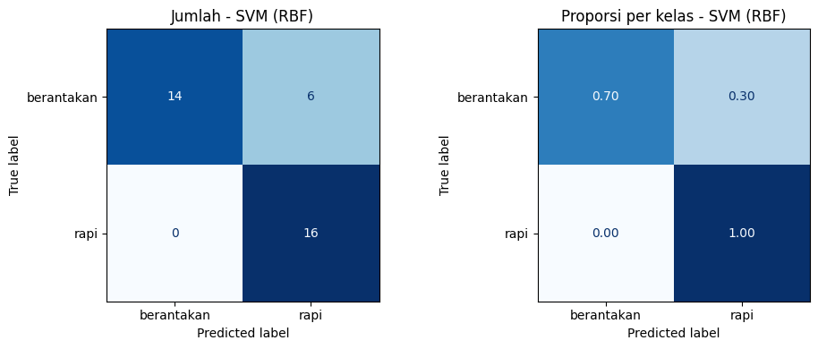
12.3 K-Nearest Neighbors (KNN)#
Cara kerja. Untuk memprediksi satu gambar baru, KNN mencari \(k\) gambar latih yang paling dekat dengannya, lalu mengambil kelas mayoritas dari tetangga-tetangga itu. Jarak yang dipakai adalah jarak Euclidean:
Seperti SVM, KNN sangat bergantung pada skala, sehingga juga memakai StandardScaler. Parameter yang di-tuning adalah n_neighbors dan weights (uniform atau distance).
grid_knn = GridSearchCV(
Pipeline([("scaler", StandardScaler()), ("knn", KNeighborsClassifier())]),
param_grid={"knn__n_neighbors": [3, 5, 7, 9, 11, 15], "knn__weights": ["uniform", "distance"]},
cv=cv, scoring="f1_macro",
)
grid_knn.fit(X_train, y_train, groups=g_train)
model_knn = grid_knn.best_estimator_
print(f"Parameter terbaik : {grid_knn.best_params_}")
print(f"F1 CV ({n_fold}-fold) : {grid_knn.best_score_:.3f}\n")
evaluasi_model("KNN", model_knn)
Parameter terbaik : {'knn__n_neighbors': 15, 'knn__weights': 'uniform'}
F1 CV (5-fold) : 0.655
Akurasi data uji : 0.722
precision recall f1-score support
berantakan 0.812 0.650 0.722 20
rapi 0.650 0.812 0.722 16
accuracy 0.722 36
macro avg 0.731 0.731 0.722 36
weighted avg 0.740 0.722 0.722 36
Confusion matrix (baris = sebenarnya, kolom = prediksi):
prediksi berantakan prediksi rapi
sebenarnya berantakan 13 7
sebenarnya rapi 3 13
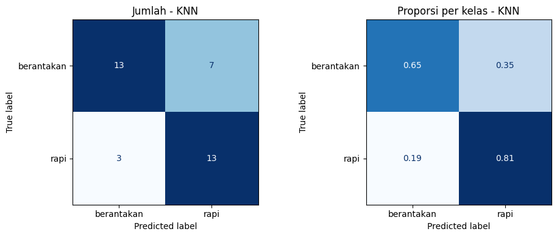
12.4 Gaussian Naive Bayes#
Cara kerja. Memakai teorema Bayes dengan asumsi setiap fitur saling bebas dan berdistribusi normal di dalam tiap kelas. Sangat cepat dan hampir tanpa parameter, tapi asumsi bebasnya kurang cocok untuk fitur yang saling berkorelasi (misalnya mean_r/g/b). Parameter yang di-tuning adalah var_smoothing.
grid_nb = GridSearchCV(
Pipeline([("scaler", StandardScaler()), ("nb", GaussianNB())]),
param_grid={"nb__var_smoothing": [1e-9, 1e-7, 1e-5, 1e-3, 1e-1]},
cv=cv, scoring="f1_macro",
)
grid_nb.fit(X_train, y_train, groups=g_train)
model_nb = grid_nb.best_estimator_
print(f"Parameter terbaik : {grid_nb.best_params_}")
print(f"F1 CV ({n_fold}-fold) : {grid_nb.best_score_:.3f}\n")
evaluasi_model("Naive Bayes", model_nb)
Parameter terbaik : {'nb__var_smoothing': 0.1}
F1 CV (5-fold) : 0.561
Akurasi data uji : 0.750
precision recall f1-score support
berantakan 0.923 0.600 0.727 20
rapi 0.652 0.938 0.769 16
accuracy 0.750 36
macro avg 0.788 0.769 0.748 36
weighted avg 0.803 0.750 0.746 36
Confusion matrix (baris = sebenarnya, kolom = prediksi):
prediksi berantakan prediksi rapi
sebenarnya berantakan 12 8
sebenarnya rapi 1 15
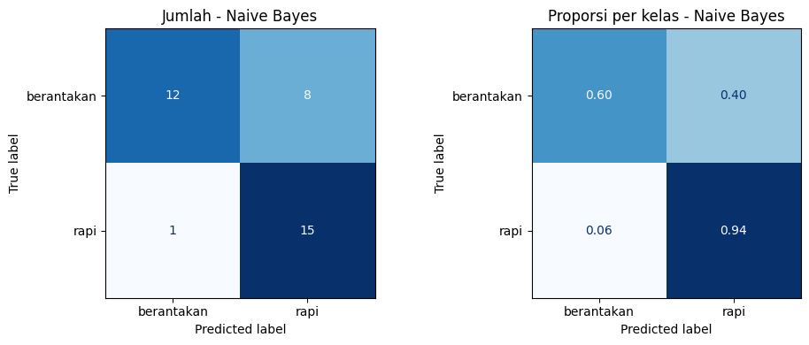
13. Evaluasi#
13.1 Perbandingan Semua Metode#
F1 CV adalah rata-rata fold pada data latih, sedangkan kolom lainnya diukur pada data uji.
models = {"Random Forest": model_rf, "SVM (RBF)": model_svm, "KNN": model_knn,
"Naive Bayes": model_nb}
grids = {"Random Forest": grid_rf, "SVM (RBF)": grid_svm, "KNN": grid_knn,
"Naive Bayes": grid_nb}
ringkasan = []
for nama, model in models.items():
pred = model.predict(X_test)
ringkasan.append({
"Metode": nama,
"F1 CV (latih)": grids[nama].best_score_,
"Accuracy": accuracy_score(y_test, pred),
"Precision": precision_score(y_test, pred, average="macro", zero_division=0),
"Recall": recall_score(y_test, pred, average="macro", zero_division=0),
"F1 (uji)": f1_score(y_test, pred, average="macro", zero_division=0),
})
perbandingan = pd.DataFrame(ringkasan).set_index("Metode").round(3).sort_values("F1 (uji)", ascending=False)
perbandingan.to_csv(os.path.join(FOLDER_OUTPUT, "perbandingan_model.csv"))
perbandingan
| F1 CV (latih) | Accuracy | Precision | Recall | F1 (uji) | |
|---|---|---|---|---|---|
| Metode | |||||
| SVM (RBF) | 0.632 | 0.833 | 0.864 | 0.850 | 0.833 |
| Random Forest | 0.645 | 0.750 | 0.788 | 0.769 | 0.748 |
| Naive Bayes | 0.561 | 0.750 | 0.788 | 0.769 | 0.748 |
| KNN | 0.655 | 0.722 | 0.731 | 0.731 | 0.722 |
metrik = ["F1 CV (latih)", "Accuracy", "F1 (uji)"]
posisi = np.arange(len(perbandingan))
lebar = 0.26
fig, ax = plt.subplots(figsize=(12, 4))
for i, m in enumerate(metrik):
batang = ax.bar(posisi + (i - 1) * lebar, perbandingan[m], lebar, label=m)
ax.bar_label(batang, fmt="%.2f", fontsize=8, padding=2)
ax.set_xticks(posisi, perbandingan.index, rotation=20, ha="right")
ax.set(ylim=(0, 1.1), ylabel="Skor", title="Perbandingan ketujuh metode")
ax.legend(loc="lower right")
plt.show()
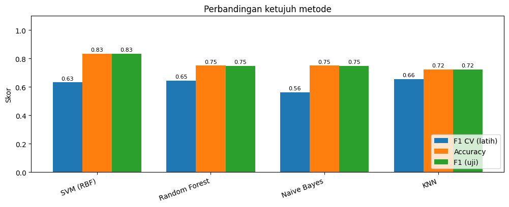
13.2 Confusion Matrix Semua Metode#
Semua confusion matrix ditampilkan berdampingan supaya jumlah kesalahan tiap metode mudah dibandingkan.
kolom = 4
baris = int(np.ceil(len(models) / kolom))
fig, axes = plt.subplots(baris, kolom, figsize=(4 * kolom, 3.6 * baris))
axes = np.atleast_1d(axes).ravel()
for ax, (nama, model) in zip(axes, models.items()):
pred = model.predict(X_test)
cm = confusion_matrix(y_test, pred, labels=KELAS)
ConfusionMatrixDisplay(cm, display_labels=KELAS).plot(ax=ax, cmap="Blues", colorbar=False)
ax.set_title(f"{nama}\nakurasi = {accuracy_score(y_test, pred):.3f}")
for ax in axes[len(models):]:
ax.axis("off")
plt.tight_layout()
plt.show()
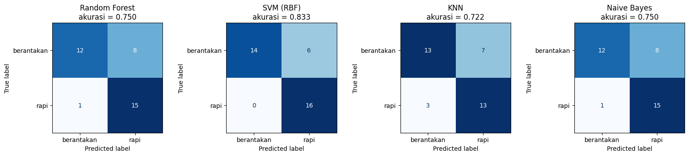
13.3 Feature Importance#
Feature importance menjawab pertanyaan: fitur mana yang paling diandalkan model? Dua cara dipakai:
Gini importance (
feature_importances_) bawaan Random Forest.Permutation importance untuk semua model. Nilai satu fitur di data uji diacak, lalu diukur seberapa besar akurasi turun. Makin besar penurunannya, makin penting fitur tersebut. Cara ini dipakai karena SVM dan KNN tidak punya
feature_importances_bawaan.
Jika data uji kecil, satu prediksi yang berubah sudah menggeser akurasi cukup besar, jadi nilai permutation importance yang kecil atau negatif wajar terjadi.
gini = pd.Series(model_rf.feature_importances_, index=FITUR).sort_values().tail(15) # 15 teratas
fig, ax = plt.subplots(figsize=(8, 5))
gini.plot.barh(ax=ax, color="tab:green")
ax.set(xlabel="Gini importance", title="15 fitur terpenting - Random Forest")
plt.show()
gini.sort_values(ascending=False).head(5).round(3)
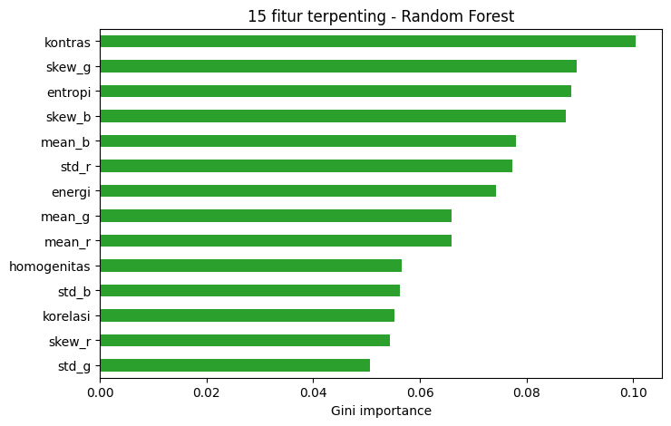
kontras 0.100
skew_g 0.089
entropi 0.088
skew_b 0.087
mean_b 0.078
dtype: float64
from sklearn.inspection import permutation_importance
perm = {}
for nama, model in models.items():
hasil = permutation_importance(model, X_test, y_test, n_repeats=30,
random_state=42, scoring="accuracy")
perm[nama] = pd.Series(hasil.importances_mean, index=FITUR)
perm = pd.DataFrame(perm)
teratas = perm.mean(axis=1).sort_values(ascending=False).head(10).index
fig, ax = plt.subplots(figsize=(9, 5))
perm.loc[teratas[::-1]].plot.barh(ax=ax)
ax.set(xlabel="Penurunan akurasi saat fitur diacak", title="Permutation importance (10 fitur teratas)")
plt.show()
perm.loc[teratas].round(3).head(5)
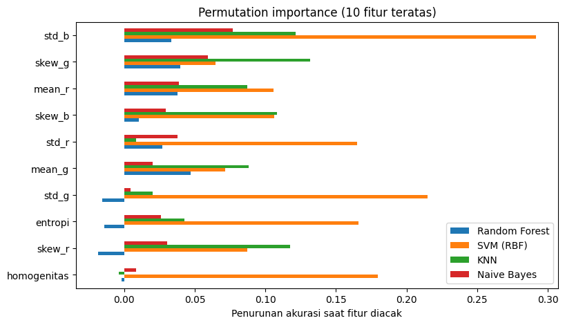
| Random Forest | SVM (RBF) | KNN | Naive Bayes | |
|---|---|---|---|---|
| std_b | 0.033 | 0.292 | 0.121 | 0.077 |
| skew_g | 0.040 | 0.065 | 0.131 | 0.059 |
| mean_r | 0.038 | 0.106 | 0.087 | 0.039 |
| skew_b | 0.010 | 0.106 | 0.108 | 0.030 |
| std_r | 0.027 | 0.165 | 0.008 | 0.038 |
13.4 Penentuan Metode Terbaik#
Metode terbaik ditentukan dari F1 makro pada data uji, karena data uji mewakili gambar baru yang belum pernah dilihat model. Jika skornya sama, dipilih metode dengan F1 CV lebih tinggi karena lebih stabil di berbagai pembagian data.
urut = perbandingan.sort_values(["F1 (uji)", "F1 CV (latih)"], ascending=False)
METODE_TERBAIK = urut.index[0]
model_terbaik = models[METODE_TERBAIK]
print(f"Metode terbaik : {METODE_TERBAIK}")
print(f"F1 uji : {urut.loc[METODE_TERBAIK, 'F1 (uji)']:.3f}")
print(f"Accuracy uji : {urut.loc[METODE_TERBAIK, 'Accuracy']:.3f}")
urut
Metode terbaik : SVM (RBF)
F1 uji : 0.833
Accuracy uji : 0.833
| F1 CV (latih) | Accuracy | Precision | Recall | F1 (uji) | |
|---|---|---|---|---|---|
| Metode | |||||
| SVM (RBF) | 0.632 | 0.833 | 0.864 | 0.850 | 0.833 |
| Random Forest | 0.645 | 0.750 | 0.788 | 0.769 | 0.748 |
| Naive Bayes | 0.561 | 0.750 | 0.788 | 0.769 | 0.748 |
| KNN | 0.655 | 0.722 | 0.731 | 0.731 | 0.722 |
14. Pembuktian: Apakah Fitur Tambahan Benar-benar Membantu?#
Bab ini membandingkan model yang hanya memakai 14 fitur asli dengan model yang memakai semua fitur. Datanya kecil, jadi satu kali split 80:20 hasilnya kurang stabil. Dipakai cross validation berulang pada seluruh data dengan dua cara:
Repeated Stratified 5-Fold (3 kali ulang): akurasi dirata-rata dari 15 pembagian berbeda.
Stratified Group K-Fold: foto satu grup tidak terpisah antara data latih dan uji (lebih jujur).
14.1 Hasil Perbandingan#
from sklearn.model_selection import RepeatedStratifiedKFold, StratifiedGroupKFold, cross_val_score
def buat_model():
return {
"Random Forest": RandomForestClassifier(n_estimators=300, random_state=42),
"SVM (RBF)": Pipeline([("sc", StandardScaler()), ("m", SVC(C=3))]),
"KNN": Pipeline([("sc", StandardScaler()), ("m", KNeighborsClassifier(n_neighbors=5))]),
"Naive Bayes": Pipeline([("sc", StandardScaler()), ("m", GaussianNB())]),
}
kumpulan_fitur = {
"14 fitur asli": dataset[FITUR_ASLI],
"semua fitur": pd.concat([dataset[FITUR_ASLI].reset_index(drop=True), tambahan.reset_index(drop=True)], axis=1),
}
cv_acak = RepeatedStratifiedKFold(n_splits=5, n_repeats=3, random_state=42)
baris = []
for nama_set, Xs in kumpulan_fitur.items():
for nama_model, model in buat_model().items():
a = cross_val_score(model, Xs, y, cv=cv_acak).mean()
g = np.mean([cross_val_score(model, Xs, y, groups=grup,
cv=StratifiedGroupKFold(5, shuffle=True, random_state=s)).mean()
for s in range(3)])
baris.append({"Fitur": nama_set, "Metode": nama_model, "Akurasi CV acak": a, "Akurasi CV per-grup": g})
hasil_cv = pd.DataFrame(baris).round(3)
hasil_cv.to_csv(os.path.join(FOLDER_OUTPUT, "perbandingan_fitur.csv"), index=False)
hasil_cv
| Fitur | Metode | Akurasi CV acak | Akurasi CV per-grup | |
|---|---|---|---|---|
| 0 | 14 fitur asli | Random Forest | 0.710 | 0.658 |
| 1 | 14 fitur asli | SVM (RBF) | 0.667 | 0.672 |
| 2 | 14 fitur asli | KNN | 0.648 | 0.611 |
| 3 | 14 fitur asli | Naive Bayes | 0.579 | 0.563 |
| 4 | semua fitur | Random Forest | 0.778 | 0.738 |
| 5 | semua fitur | SVM (RBF) | 0.833 | 0.774 |
| 6 | semua fitur | KNN | 0.789 | 0.755 |
| 7 | semua fitur | Naive Bayes | 0.627 | 0.611 |
pivot = hasil_cv.pivot(index="Metode", columns="Fitur", values="Akurasi CV per-grup")
ax = pivot.plot.bar(figsize=(12, 4), rot=20)
for c in ax.containers:
ax.bar_label(c, fmt="%.2f", fontsize=8, padding=2)
ax.set(ylim=(0, 1), ylabel="Akurasi (CV per-grup)", title="Pengaruh fitur tambahan terhadap akurasi")
plt.show()
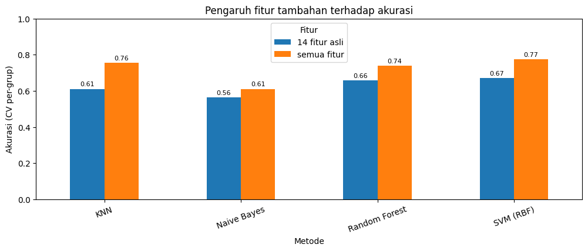
14.2 Confusion Matrix dengan Semua Fitur#
Prediksi diambil dengan cross_val_predict (Stratified Group K-Fold), sehingga setiap gambar diprediksi oleh model yang tidak pernah melihat grupnya. Hasilnya confusion matrix dari seluruh dataset, lebih stabil daripada dari data uji yang kecil.
from sklearn.model_selection import cross_val_predict
X_lengkap = kumpulan_fitur["semua fitur"]
terbaik = hasil_cv[hasil_cv["Fitur"] == "semua fitur"].sort_values("Akurasi CV per-grup").iloc[-1]["Metode"]
print("Metode terbaik (CV per-grup, fitur lengkap):", terbaik)
pred = cross_val_predict(buat_model()[terbaik], X_lengkap, y, groups=grup,
cv=StratifiedGroupKFold(5, shuffle=True, random_state=0))
print(f"Akurasi: {accuracy_score(y, pred):.3f}\n")
print(classification_report(y, pred, labels=KELAS, digits=3))
cm = confusion_matrix(y, pred, labels=KELAS)
fig, axes = plt.subplots(1, 2, figsize=(10, 4))
ConfusionMatrixDisplay(cm, display_labels=KELAS).plot(ax=axes[0], cmap="Blues", colorbar=False)
axes[0].set_title(f"Jumlah - {terbaik}")
ConfusionMatrixDisplay(confusion_matrix(y, pred, labels=KELAS, normalize="true"),
display_labels=KELAS).plot(ax=axes[1], cmap="Blues", colorbar=False, values_format=".2f")
axes[1].set_title("Proporsi per kelas")
plt.tight_layout(); plt.show()
Metode terbaik (CV per-grup, fitur lengkap): SVM (RBF)
Akurasi: 0.768
precision recall f1-score support
berantakan 0.771 0.763 0.767 97
rapi 0.765 0.773 0.769 97
accuracy 0.768 194
macro avg 0.768 0.768 0.768 194
weighted avg 0.768 0.768 0.768 194
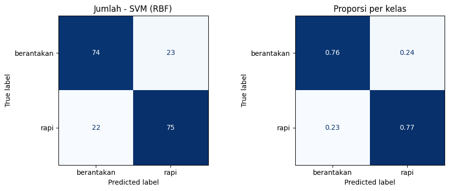